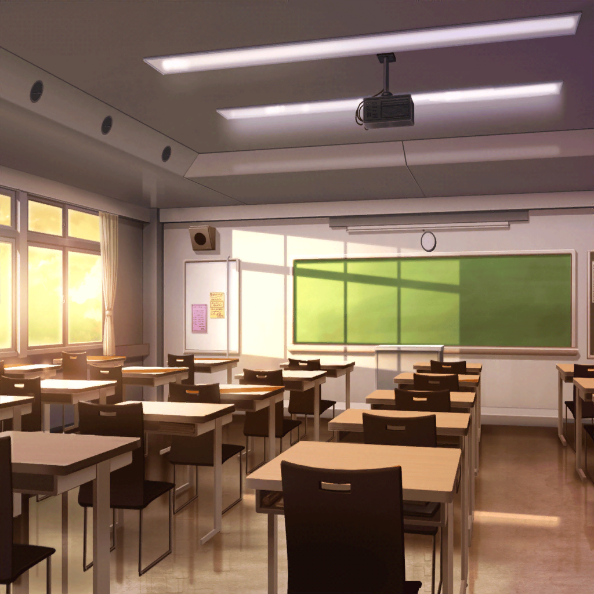

放課後
羽丘女子学園 1-B教室
モカ・つぐみ
…………はぁ〜……
つぐみ
マンガって難しいね……
モカ
むむむ〜。
ネタ自体は出てるけど、全然まとまらないって感じ〜
つぐみ
出てくる案も、盛り上がるシーンばっかりだし……
そこにいくまでの部分が全然思いつかないよ。
お話を考えるのって、すっごく難しいんだね
モカ・つぐみ
うーん……
ひまり
もー、だから教室戻るの遅れちゃうよって言ったのに〜。
巴がなんでもホイホイ引き受けるせいだからね！
巴
悪かったって。蘭待ってる間に、ちょっとくらいなら
いいかなーって思ってさ。まさか、資料室の片付け手伝えって
言われるとは思わなかったんだよ
蘭
あたしもさっき終わったし、ちょうど良かったじゃん。
モカ、つぐみ、おまたせ…………って、何その顔
モカ
あ、蘭ー。おつかれ〜
つぐみ
お疲れさま、蘭ちゃん。それに巴ちゃんとひまりちゃんも
ひまり
つーぐー！ 聞いてよ、巴ってばさー！
蘭
はいはい。
その話はまたあとで……で、２人は何してたの？
なんか悩んでるっぽいけど
つぐみ
あ、あはは……実は……
蘭・ひまり
マンガ……！？
巴
モカとつぐが２人で……！？
つぐみ
や、やっぱり驚くよね……？
ひまり
そりゃ驚くよ！ なんで？
いつの間にそんな話になってたの！？
蘭
どう考えても原因はモカでしょ
モカ
え〜、ひどいよ〜蘭〜。
今回はたまたま、そうだっただけだって〜
つぐみ
あのね、モカちゃん、好きなマンガが
終わっちゃったんだって。新しく、これだ！ ってマンガを
見つけるのも大変みたいで
つぐみ
どうしようって思ってたんだけど……モカちゃんが持ってた
雑誌にね。見て、これ！ 『新人漫画賞開催のお知らせ』！
つぐみ
これを見て私、ピンときたんだ！
おもしろいマンガに出会えないなら、
自分達で作っちゃえばいいんじゃないかなって！
巴
おおー、そっか。なんて言うか、つぐらしい案だな
ひまり
とか言って、本当は賞金目当てなんじゃないのー？
そういうのって、賞金いっぱい出るんでしょ？
巴
はははっ。そうなったら、モカとつぐは漫画家かー……
今のうちにサインもらっとくか？
モカ
２人とも、さては本気にしてませんなー？
ひまり
そ、そうは言ってないじゃん！
それで？ ２人はどんなマンガ描くの？
モカ
だからー、それを悩んでるんだってばー
蘭
モカ、たくさんマンガ読んでるんだし
そういうの、ポンポン出てきそうな気もするけど
つぐみ
クライマックスとか、
盛り上がる部分の案は出てくるんだけど、始め方が難しくて。
いきなりつまづいちゃってるんだ
モカ
そーそー。ちーなーみーにー、
みんなはどんなのがいいと思うー？
巴
そりゃもう、あっついのがいいに決まってるって！
仲間、友情、絆……拳で語り合って、最後にはわかり合う！
憧れるよな〜！
ひまり
私は断然、恋愛ものだな〜！
キュンキュンできて、最後には泣けちゃうやつがいい！
蘭
え……あたしはマンガって、たまにモカから借りるくらいだし……
正直よくわかんないかも
巴
でも蘭って、結構なんでも読むよな。
アタシもこの前マンガ貸したばっかりだし
蘭
なんでもって言うか……自分で選ばないから、バラバラになる
だけだと思う。どれも普通に面白いけど、
特別どれが良かったとかは全然わかんない
蘭
ていうかこれ、それぞれ好きなマンガ言っただけじゃない？
つぐみ
確かに……でも、好きだからこそうまく描けるってことも
あるかも知れないよね？
モカ
ふむふむ。なるほどなるほど〜。
なんかー、今のみんなの話でモカっときちゃったかも〜
ひまり
もー、モカはまた適当なこと言って〜
巴
それで、２人はどんなのがいいと思うんだ？
まあ、なんとなくはわかってるんだけどさ
つぐみ
うん。私とモカちゃんはね――
モカ
つーぐー、ストーップ
つぐみ
！？ モ、モカちゃん？
モカ
モカってきたって言ったでしょ〜。
さっきまでしてた、あたしたちの話、
ちょっとまとめてみたんだ〜
つぐみ
ほ、ほんと！？
モカ
うん。でも、まとまったのは最初だけだから
あとはつぐにも手伝って欲しいなー
つぐみ
うん！ もちろんだよっ！
巴
おお、なんかドキドキするな！
ひまり
モカとつぐが好きなマンガを足したお話、でしょ？
うーん……全然想像できない
蘭
モカ……大丈夫なの？
モカ
ふっふっふー。モカちゃんにおまかせあれ〜
モカ
ではでは、はじまりはじまり〜